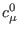
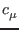
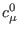
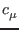
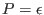
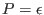
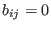
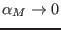
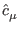
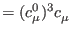

Next: Boundary Up: Fortran: Module Interface turbulence: Previous: Update Contents
INTERFACE:
subroutine compute_cm0(turb_method,stab_method,scnd_method)DESCRIPTION:
Computes the values of the stability function  defined
in (44) in the logarithmic boundary-layer, , and in
shear-free, spatially decaying turbulence,
sf (see
section 4.7.4).
defined
in (44) in the logarithmic boundary-layer, , and in
shear-free, spatially decaying turbulence,
sf (see
section 4.7.4).
is the value of  in unstratified
equilibrium flows, i.e. in the logarithmic wall region. It can be obtained
from the relation
, according to (78)
written in the form
in unstratified
equilibrium flows, i.e. in the logarithmic wall region. It can be obtained
from the relation
, according to (78)
written in the form
Algebraic Stress Models exhibit an interesting behaviour in unstratified, shear-free turbulence. Clearly, in the absence of shear, these models predict isotropic turbulence, , according to (59). This is a direct consequence of the assumption (58), implying an infinitely small return-to-isotropy time scale. Formally, however, the limit of the stability function for  follows from (74) and the definitions given in sections 4.7.37-4.7.39. The limiting value is
Note that sfsf according to (76).
USES:
IMPLICIT NONEINPUT PARAMETERS:
integer, intent(in) :: turb_method
integer, intent(in) :: stab_method
integer, intent(in) :: scnd_method
REVISION HISTORY:
Original author(s): Lars Umlauf
Karsten Bolding 2012-01-24